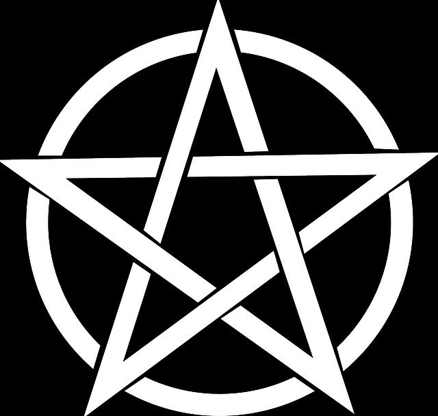

- Candles, Incense & Oils
- Home, Clothing & Jewelry
- Spells
- Practices
About Us
만나서 반가워요!
13 moons는 다양한 제품을 판매함으로써 많은 마녀들에게 서비스를 제공하기 위해 노력하고 있습니다. 이곳에서는 초보자에서부터 숙련자까지, 사용자에게 필요한 마법 용품을 찾을 수 있습니다.
1980년대, 마법이 시작되다
모험에 대한 사랑은 Sandy와 Jeff을 함께하도록 만들었죠. 페이건 서적, 주술 도구, 힐링, 수작업 도구와 허브 정원을 가꾸기 시작했죠. 이 열정은 마법에 관한 커뮤니티를 만드는 것으로 이어졌습니다.
1990년대, 13 moons의 시작
처음에 우리는 바위에 소원과 바램을 담아 바위 위에 룬 모양을 그리곤 했답니다. 별 기대 없이 시도했던 일들이었지만 그 소원과 바램들은 실제로 이루어졌죠. 그리고 그것이 현재의 13moons라고 말할 수 있습니다. 저렴하고 질 좋은 제단 용품들을 필요로 하는 모든 사용자들이 우리에게 새로운 모험을 선사했지요.
2000년대, CRAFTERS 가입
지팡이, 의복, 원석, 촛불, 허브, 조각상 등을 제공하는 13moons에 여러 공예가와 예술가들이 함께했습니다! 지난 몇 년 동안 13개의 달은 전 세계로 커져갔죠.
footer